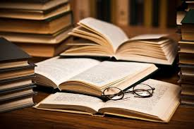
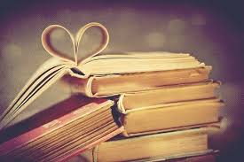
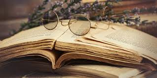
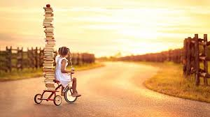
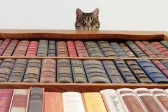
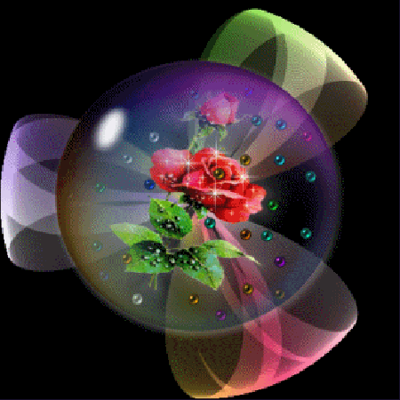

Почему я создала этот сайт ?
Для меня книги-это жизнь. И мне бы очень хотелось , чтобы больше сверстников разделило мою любовь к чтению .
Искренни надеюсь, что вам понравится мой сайт.
Почему люди так любят читать ?
- Мудрость
- Новые знания
- вдохновение
- Отдых от проблем
- Перемены в жизни
- Окно в другой мир
- Энергетика
- История
- Тренажер для мозга
- Настоящие ценности
- лекарство от бессоницы
- Веселые путешествия
- Уют
- список

- Мудрость
В книге найдется ответ на любой вопрос.
Что бы ни произошло в жизни,
книга всегда подскажет, как поступить.
- Новые знания

Людей, которые любят читать, объединяет еще и повышенная познавательная потребность:
им все интересно, они очень любознательные.
Книги — бесконечный и неиссякаемый источник знаний.
- вдохновение
Истории, рассказанные другими людьми, вдохновляют на свершения.
Великие цели, смелые мечты, добрые дела.
Книги способны подарить крылья!
- Отдых от проблем
Чтение — отличный способ отвлечься от забот и проблем,
которые не дают радоваться жизни.
Отдышаться, осмыслить происходящее, выбраться из суеты повседневности.
И найти решение!
- Перемены в жизни

«Книги, которые изменили мою жизнь» — категория, которая отстоит отдельно ото всех других.
Наверное, каждый читающий человек мечтает найти ту самую книгу,
которая станет поворотным моментом и запустит механизм перемен к лучшему.
- Окно в другой мир

Книга — проводник в иные миры, в параллельную реальность или хотя бы в другую страну.
Они помогают увидеть жизнь совсем другими глазами и познакомиться с тем,
с чем в обыденности не довелось бы столкнуться: полетать на драконе,
стать флибустьером и даже побывать на другой планете.
- Энергетика
Читая, заряжаешься энергией автора, переводчиков, редакторов и других людей,
которые вложили частичку души в эту книгу, — во вполне осязаемый предмет,
который можно повертеть в руках, рассмотреть со всех сторон и
,
самое главное, осознать посыл и мысли, заложенные в ней,
прочувствовать атмосферу творчества.
- История
На потертых страницах изданий разных лет хранится история, культура, обычаи и идеи людей.
Мы можем прикоснуться к прошлому, понять, о чем думали и что чувствовали люди, жившие в другом столетии.
Чтение — своего рода машина времени.
- Тренажер для мозга

Хорошие книги — упражнения для нашего мозга:
они не дают ему застрять на привычных вещах и узко мыслить,
открывают новые горизонты.
- Настоящие ценности
В современном мире слишком много материального: культура потребления отвоевывает все больше и больше.
И вот уже качество и престиж стали синонимами высокой цены.
Купить можно все, что душа пожелает.
Чтение же возвращает нас к истокам, к тому, ради чего мы пришли в этот мир: к любви, добру, счастью.
И пусть книга стоит намного меньше, чем Бентли,
но она может дать человеку несравнимо больше.
- Лекарство от бессонницы
Порой наш мозг настолько перегружен,
что тревожные мысли о делах совершенно не дают уснуть, несмотря на то, что мы очень устали.
Сложно расслабиться, когда внутренний голос постоянно что-то нашептывает
(причем это далеко не ободряющие слова и вдохновляющие речи).
Чтение — идеальная таблетка от бессонницы, не имеющая побочных эффектов.
Только польза!
- Веселые путешествия

Похоже, что нет лучше попутчика, чем хорошая книга.
Смотрите сами:
собрание стихотворений Есенина или детектив Агаты Кристи не будут возражать,
если вы решите ждать вылета в кофейне, сядете на автобус вместо такси и проснетесь с утра пораньше, чтобы полюбоваться восходом солнца.
Собственно говоря, книги составят отличную компанию не только в путешествии,
но и по дороге домой и на работу, в командировке и отпуске.
О чем еще мечтать?
Чтение — интеллектуальный наркотик, но только в хорошем смысле. Серьезно! Чем больше читаешь, тем больше хочется.
В один прекрасный день обнаруживаешь себя бродящим по книжному магазину, словно зомби, в поисках пищи для ума.
Да, подобную зависимость порождают все виды искусства:
музыка, изобразительное искусство, театр, фотография и кино.
Но только чтение, будь то художественная литература или нон-фикшн, только книги расширяют сознание так,
как это не делает никакое другое искусство.
- Список
А сейчас , я вам дам список книг которых советую:
- Мастер и Маргарита
- Преступление и наказание
- Маленький принц
- Портрет Дориана Грея
- Алиса в Стране чудес
- Гордость и предубеждение
- Приключения Тома Сойера. Приключения Гекльберри Финна
- Всё о муми-троллях
- Чайка по имени Джонатан Ливингстон
- Унесенные ветром
использованная литература
http://igorkovalenko.com
readrate.com
Видео на нашу тему